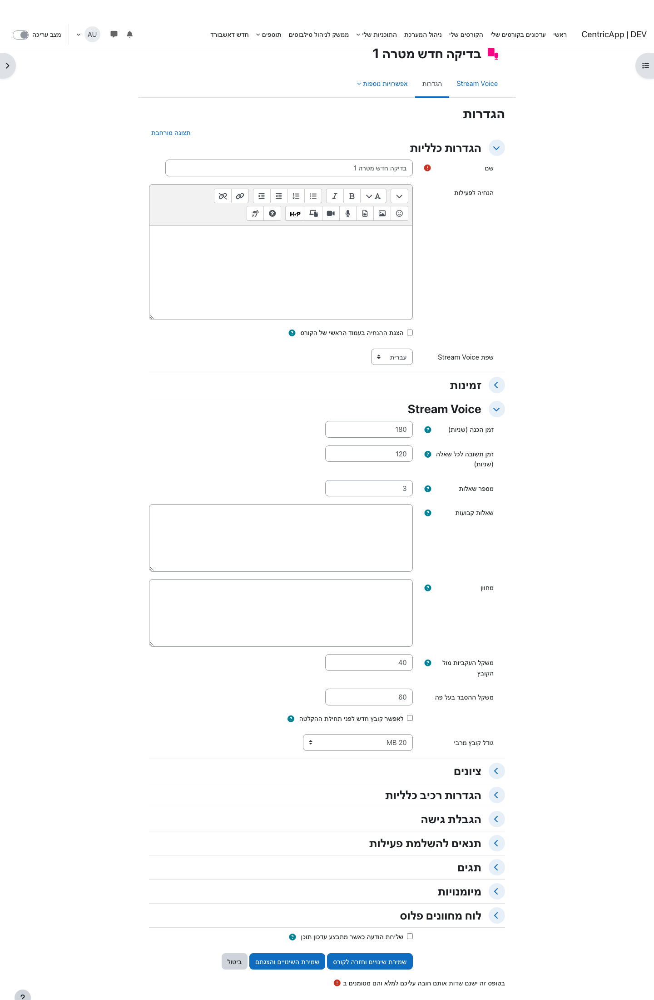
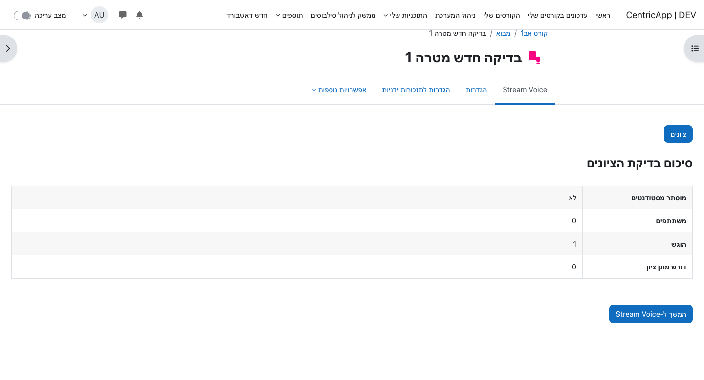
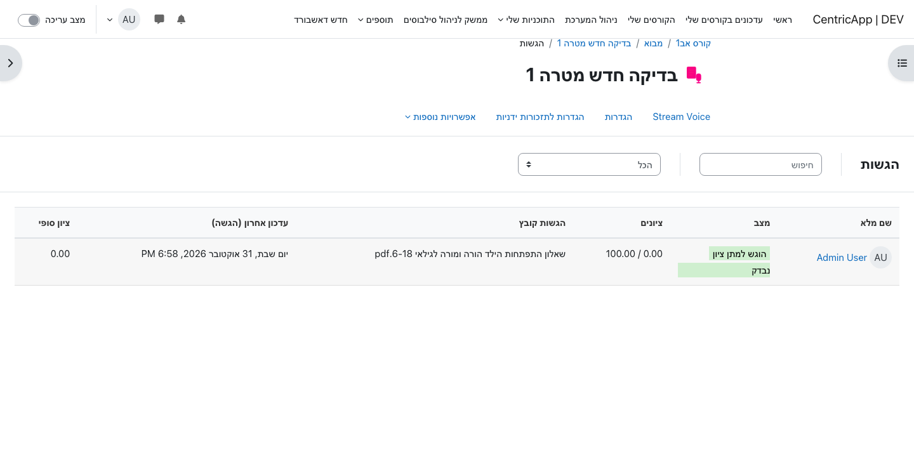
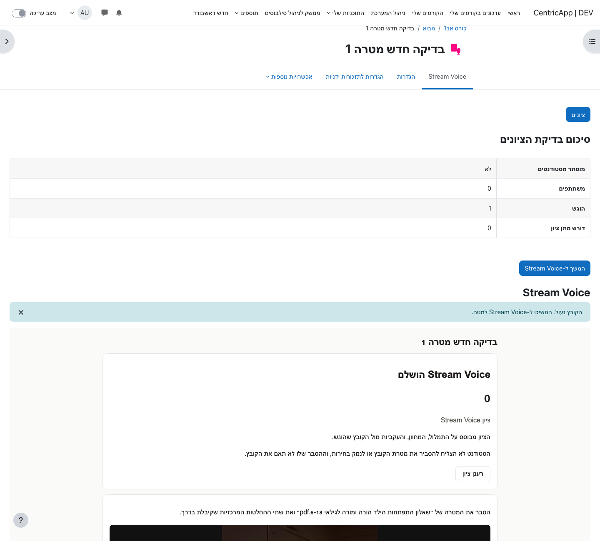
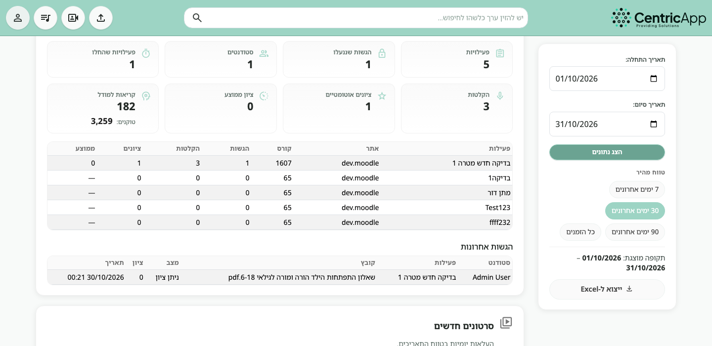

What Stream Voice is
Stream Voice is a course activity. The student submits a file of the work, the code, or the project. After submission the file is locked, and the student explains on camera how they thought and what they chose.
The aim is to see that the student understands the work and can justify it. The score checks understanding, reasoning, and consistency between the explanation and the locked file.
Moodle keeps the activity settings and the gradebook grade. Stream keeps the locked file, the questions, the recordings, the transcript, and the automatic score.
Before you add an activity
- In Moodle, under Site administration → Plugins → Local plugins → Stream, the Stream URL and API key need to be set.
- Stream needs an active language model. It calculates the score after the recording.
- The student needs camera and microphone access in the browser while recording.
- The student needs to be enrolled in the course with the student role in order to submit.
Adding the activity and its settings
- Open the course and turn on edit mode.
- Choose Add an activity or resource.
- Choose Stream Voice.
- Give it a name students will see in the course, and save.

General settings and availability
- Name and the activity description are shown to students like any other Moodle activity.
- Stream Voice language sets the language of the questions, the instructions, and the score. The default is Hebrew.
- Availability is an open date and a due date, as in an assignment. Both can stay empty.
The Stream Voice section
- Preparation time is how long the student has to read the questions and write speaker notes before recording opens. The default is 180 seconds. The allowed range is 0 to 3600.
- Answer time per question is the maximum length of each recording. The default is 120 seconds. The allowed range is 30 to 900.
- Number of questions is between 1 and 8. The default is 3.
- Fixed questions are one question per line, asked as written. If they do not fill the question count, Stream writes the rest from the submitted file. An empty field means every question is built from the file.
- Rubric is sent to Stream and used for the oral score. If the field is empty, the default rubric is used: understanding, justification, consistency with the file, and independent reasoning.
- Weight of consistency with the file and weight of the oral explanation must add up to 100. The default is 40 for consistency and 60 for the explanation.
- Allow a new file before recording starts lets the student replace the file only before the first recording. After recording starts, the file stays locked.
- Maximum file size limits the file the student can submit.
Grade
In the Grade section, set the maximum points as you would for an assignment. The gradebook grade is the automatic score out of 100, multiplied by that maximum. For example, a score of 80 with a maximum of 100 is stored as 80 points.
What the teacher sees
Opening the activity shows the grading summary: how many participants there are, how many submitted, and how many still need a grade. The Grade button opens the submission list. Continue to Stream Voice appears once a submission exists.

Submissions and the grade
The submission list follows the assignment grading page. Filter by not submitted, submitted, or requiring a grade, and search by name.

The status column first shows whether a file was submitted, then where the recording stands:
- Submitted for grading after the file is locked.
- Preparing or Recording while Stream Voice is open.
- Waiting for the transcript after the recording is saved and the transcript is not ready yet.
- Waiting for the automatic score when the transcript is ready and the model has not returned a score.
- Provisional score when the score comes from speaker notes, before the transcript is ready.
- Graded when there is a final score.
The gradebook updates when Stream returns a numeric score. A student’s page shows the status, the score, the recordings, and the transcript.
What the student does
- Opens the activity and chooses Add submission.
- Uploads the file, and can add a note for the marker.
- Clicks Submit and lock. The file is locked from here.
- Clicks Continue to Stream Voice.
- During preparation, reads the questions and writes speaker notes. The notes stay on screen while recording.
- Records an answer to each question and stops when finished. Stream saves the video.
- After every question, the score appears. Refresh score calculates it again once the transcript is ready.

Usage report in Stream
A Stream administrator sees activity usage under Usage reports, at admin/analytics. The Stream Voice section uses the same date range as the rest of the report, and it is included in the Excel export on a sheet named Stream Voice.

- Activities are activities created or used in the range.
- Locked submissions are files submitted and locked in the range.
- Students is the number of distinct submitters.
- Activities started are submissions where preparation time began.
- Questions created are questions saved for submissions in the range.
- Recordings are saved video answers.
- Automatic scores and average score come from scores saved in the range.
- Model calls and tokens are language-model use for Stream Voice.
Common questions
The student cannot submit
Check that they are enrolled as a student, that the activity is inside its availability dates, and that the Stream connection is configured. The activity is registered in Stream the first time it is saved. If the message says the activity is not registered yet, open it again after saving.
Refreshing the score does not return a score
The recording is kept even without a score. Refresh calls the language model configured in Stream. If that model is unavailable, or the account balance cannot cover the request, the screen stays without a new score. A Stream administrator updates the model or the balance, then the student clicks Refresh score again.
The gradebook grade did not change
The gradebook updates when there is a numeric score. A provisional score, or waiting for a transcript, does not write the final grade yet. After a final score, reload the submissions page.
Where the recordings are
On the submissions page, click the student’s name. Under the summary are the questions, the player, and the transcript. Those recordings are also counted in the Stream usage report.